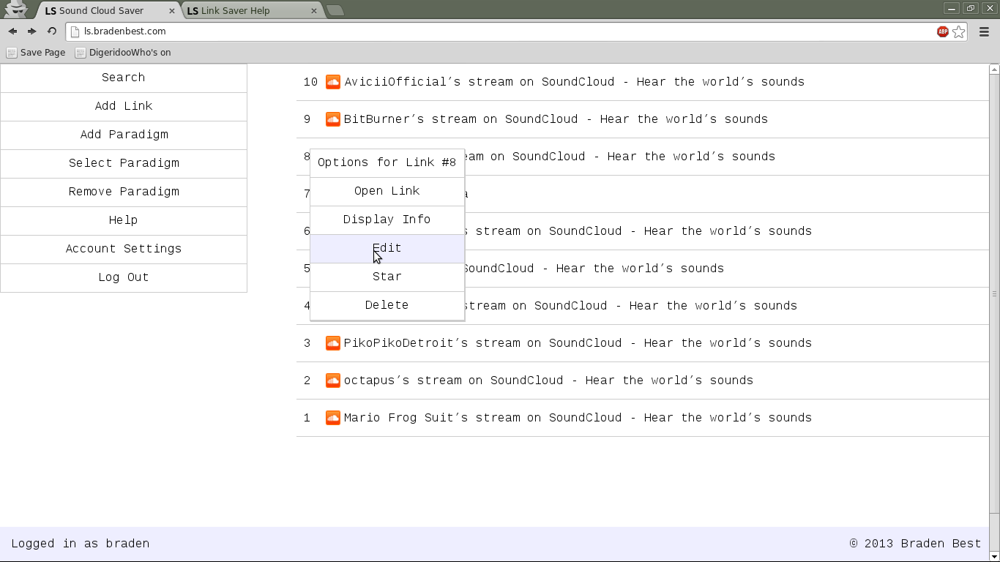
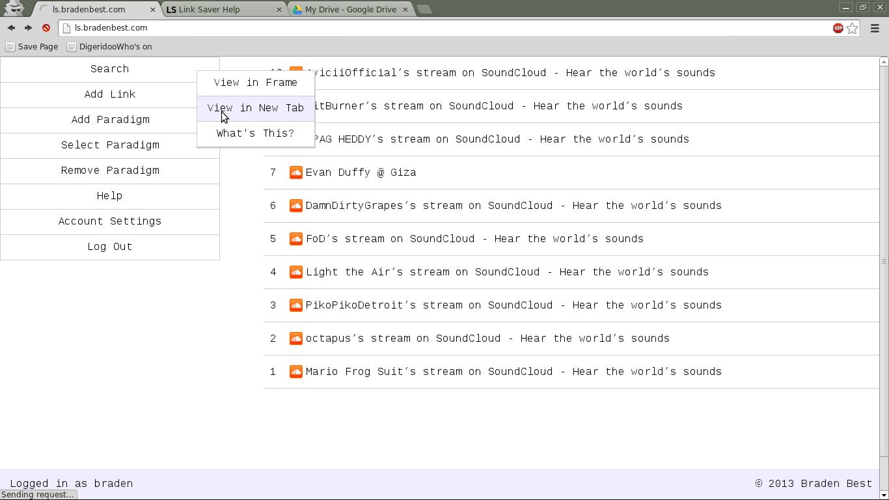
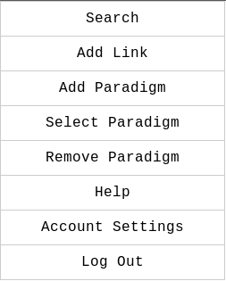
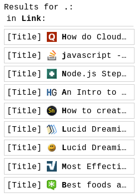
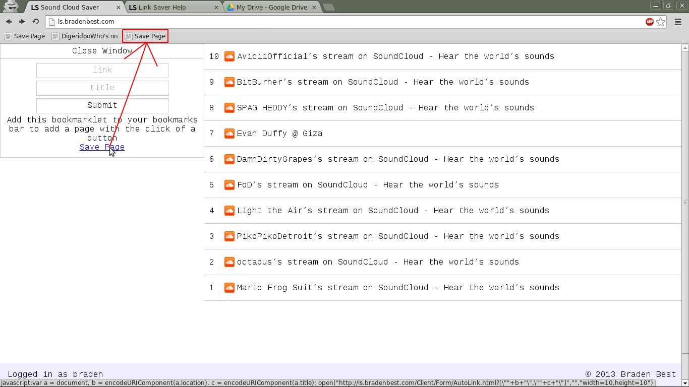
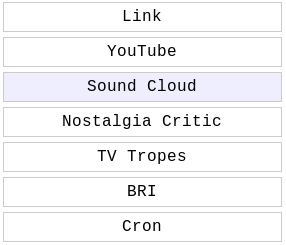
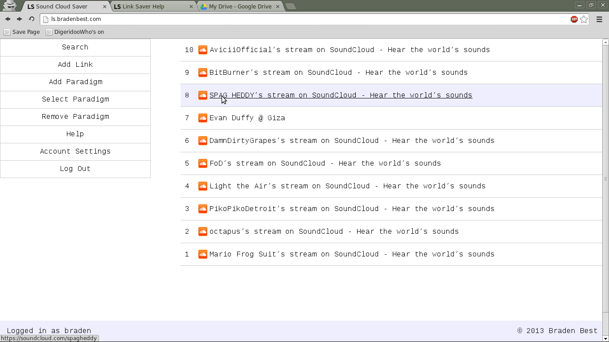
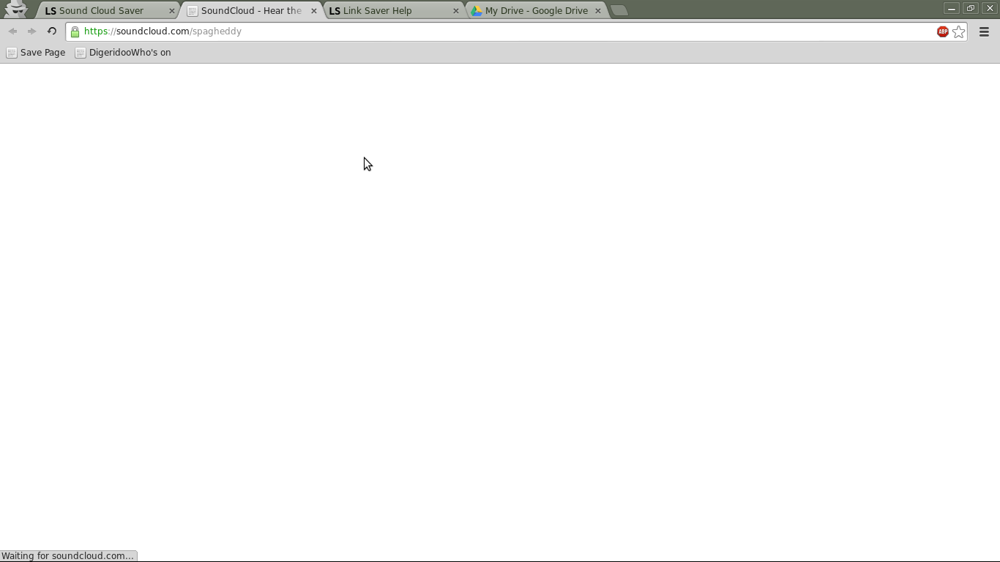

1 - The "Save Page" Bookmarklet. Add this via the Add Link Page 2 - The Menu has the tools necessary to use the link saver 3 - Your Links will appear here listed in ascending order 4 - Tells you who you are logged in as
In the Link Saver, links are managed by right clicking the link, if using a cell phone or tablet, tapping the immediate area to the left of the link's favicon will bring up the context menu, as shown below:
The menu items also have their own context menus:
Here you can choose to open the form in a frame (default), in a new tab, or learn about what the item does
By the way, the context menu is the menu you get when you right click on something.
The Main menu is how you will use the Link Saver.
 SearchThis tool allows you to search for links in all paradigms. It uses Regular Expressions, so terms like "." will list everything you have
 Add LinkThis tool allows you to, of course, Add a Link to the Link Saver. In the spirit of efficiency, I've also made a bookmarklet to add the page you're on to the link saver with the click of a bookmark
To add the bookmarklet, open your bookmarks toolbar (in chrome, that's Ctrl+Shift+B), then drag the "Save Page" link into your bookmarks bar, as demonstrated in the above screenshot
Add ParadigmThis tool allows you to add a "paradigm" to the Link Saver. I can't remember where I got "paradigm" from, but basically, it's a category for your links, or "folders", if you'd prefer to think of it that way. You can use the feature to sort your links into, for example, links from YouTube, NewGrounds, and Facebook. In this case, the paradigms would be "YouTube", "NewGrounds", and "Facebook". If you like Gmail's labels, then you'll understand why this feature is useful.
Note that when you save a link, it will save it in the current paradigm. So make sure you are in the correct Paradigm before saving a link.
Select ParadigmThis tool allows you to select between existing paradigms. A list will be generated allowing you to click on the paradigm you wish to change to.
 Remove ParadigmThis tool allows you to remove a paradigm. When you remove a paradigm, all of the associated links will be deleted as well
HelpThis is the button you probably clicked to get here
Account SettingsThis lets you change your username, password and email, just as long as the username or email don't already exist
Log OutThis logs you out. Note that you are automatically logged out when you close your browser
I thought I'd go over this just in case.
When you hover over a link's title, it will underline, clicking the link will open the link in a new tab
 As is demonstrated above
If you have the Minimalist for Everything extension for chrome, you can add a module that lets you save whatever page you're currently on with the press of Ctrl + Shift + S
Here's how to do it:
The Easy Way{"version":"0.6.7","preferences":{"isEnabled":"true","isDebugging":"false"},"modules":[{"name":"Link Saver Key Listener","author":"Braden","includes":"*minimalistsuite.com*,***","version":"1.0.0","isEnabled":true,"options":[{"description":"Shift-S Listener","isEnabled":true,"tab":"General","section":"General","type":"checkbox","fields":[],"head":{"js":["/* Press Ctrl+Shift+S to save link */","var global = {};","(function(){"," onkeydown = function(e){"," if(e.ctrlKey && e.shiftKey && e.keyCode == 0x53 && !global.linkSaved){"," var frame = document.createElement('iframe'),"," a = document, "," b = encodeURIComponent(a.location), "," c = encodeURIComponent(a.title);"," frame.src = 'http:///Client/Form/AutoLink.html?[\"'+b+'\",\"'+c+'\"]';"," frame.style.display = 'none';"," document.body.appendChild(frame);"," global.linkSaved = 1;"," setTimeout(function(){document.body.removeChild(frame)},10000);"," }"," }","})();"]},"load":{}}],"index":2}]}
- /* Press Ctrl+Shift+S to save link */
- var global = {};
- (function(){
- onkeydown = function(e){
- if(e.ctrlKey && e.shiftKey && e.keyCode == 0x53 && !global.linkSaved){
- var frame = document.createElement('iframe'),
- a = document,
- b = encodeURIComponent(a.location),
- c = encodeURIComponent(a.title);
- frame.src = 'http:///Client/Form/AutoLink.html?["'+b+'","'+c+'"]';
- frame.style.display = 'none';
- document.body.appendChild(frame);
- global.linkSaved = 1;
- setTimeout(function(){document.body.removeChild(frame)},10000);
- }
- }
- })();
To test it out, open a new tab, go to a webpage, and press Ctrl + Shift + S. After that, go to the link saver, and your link should be added
Since anonymous works by simply not attempting to send the localStorage data to the database, or request from the database, you can log into a registered account, and that would delete your links on anonymous, replacing them with the links obtained from the registered account. What if those links were important?
Obtaining a BackupYou can back up your anonymous data by opening a javascript console in your browser. This is typically pinned in the menu under "developer tools". Make sure to open the console while on the link saver app. Once you get a console open, and enter this command
localStorage['Link Saver']
This command should return the value of the localStorage entry. Copy the text that results, and there is your backup.
Restoring a BackupTo restore from the backup, log in as the desired user, in this case, anonymous, and open a javascript console. Then type
- //For this example, assume that the backup text is "{"Link":[{"link":"http://youtube.com/","title":"YouTube - Broadcast Yourself"}]}"
- text = {"Link":[{"link":"http://youtube.com/","title":"YouTube - Broadcast Yourself"}]}; // Yes, remove the quotes from the outside
- localStorage['Link Saver'] = JSON.stringify(text);
After that, the page should detect the change, and immediately refresh, loading the new links
If you're a linux user, a webmaster, or otherwise involved in linux, you can probably think of a fair amount of times when using the command-line was more efficient than the GUI. So I've added a CLI to the link saver. It's nowhere near as robust as bash, but like in bash, you can actually do more with the CLI than you can with the GUI. For example, in the CLI, you can do batch jobs on links.
Getting StartedFirst off, open a JavaScript console. In chrome, that's Ctrl+Shift+J. In firefox, Ctrl+Shift+K
Alertnatively, you can go here
The interface is object-oriented and function-based. To read the source code of the CLI, type DevTool
Note: In the console, DevTool shows the source of the DevTool class, while dev will show an instance of the class.
In the cli version of the app, DevTool will list all of the functions within the DevTool class.
Using the CLIThere are already some instances of the DevTool class: devtool, dt, and dev. Simply typing any of those in will reveal the DevTool class in a more organized fashion. For this documentation, I will refer to the instance named dev
There are five subclasses: Export, Link, Paradigm, Global and Account. Instances of them are defined inside the dev object as export, link, paradigm, etc. Inside of those are the actual functions.
Note: functions with (int min, int max) can be called as function(min,max) or just function(min). E.g. dev.link.delete(1,5) will delete links 1 - 5, while dev.link.delete(3) will delete link #3
ExportThe Export class has, as the name suggests, functions for exporting data.
The Link class has functions for manipulating the links in the current paradigm. To make it simple, the numbers displayed next to the links are used instead of the ids (which start from 0 instead of 1)
The Paradigm class has functions for the manipulation of paradigms.
The Global class has functions for gathering information on all the links in all the paradigms.
The Account class has functions for managing the current account
Well, I hope this detailed everything anyone could possibly get confused about and that you find this app as useful as I have.
-Braden